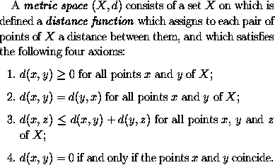
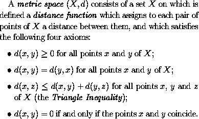
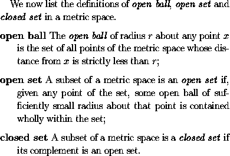

LaTeX provides the following list environments:
enumerate for numbered lists,itemize for un-numbered lists,description for description listsNumbered lists are produced using
\begin{enumerate} ... \end{enumerate}
The items included in the list should be sandwiched between
\begin{enumerate} and \end{enumerate}
and should each be preceded by the control sequence \item
(which will automatically generate the number labelling the item).
For example, the text
is generated by LaTeX from the following input:
A \emph{metric space} $(X,d)$ consists of a set~$X$ on
which is defined a \emph{distance function} which assigns
to each pair of points of $X$ a distance between them,
and which satisfies the following four axioms:
\begin{enumerate}
\item
$d(x,y) \geq 0$ for all points $x$ and $y$ of $X$;
\item
$d(x,y) = d(y,x)$ for all points $x$ and $y$ of $X$;
\item
$d(x,z) \leq d(x,y) + d(y,z)$ for all points $x$, $y$
and $z$ of $X$;
\item
$d(x,y) = 0$ if and only if the points $x$ and $y$
coincide.
\end{enumerate}
Un-numbered lists are produced using
\begin{itemize} ... \end{itemize}
Thus if we replace
\begin{enumerate} and \end{enumerate}
in the above input by
\begin{itemize} and \end{itemize}
respectively, LaTeX generates an itemized list in which each
item is preceeded by a `bullet':
Description lists (for glossaries etc.) are produced using
\begin{description} ... \end{description}
The items included in the list should be sandwiched between
\begin{description} and \end{description}
and should each be preceded by
\item[label],
where label is the label to be assigned to each item.
For example, the text
is generated by LaTeX from the following input:
We now list the definitions of \emph{open ball},
\emph{open set} and \emph{closed set} in a metric space.
\begin{description}
\item[open ball]
The \emph{open ball} of radius~$r$ about any point~$x$
is the set of all points of the metric space whose
distance from $x$ is strictly less than $r$;
\item[open set]
A subset of a metric space is an \emph{open set} if,
given any point of the set, some open ball of
sufficiently small radius about that point is contained
wholly within the set;
\item[closed set]
A subset of a metric space is a \emph{closed set} if its
complement is an open set.
\end{description}